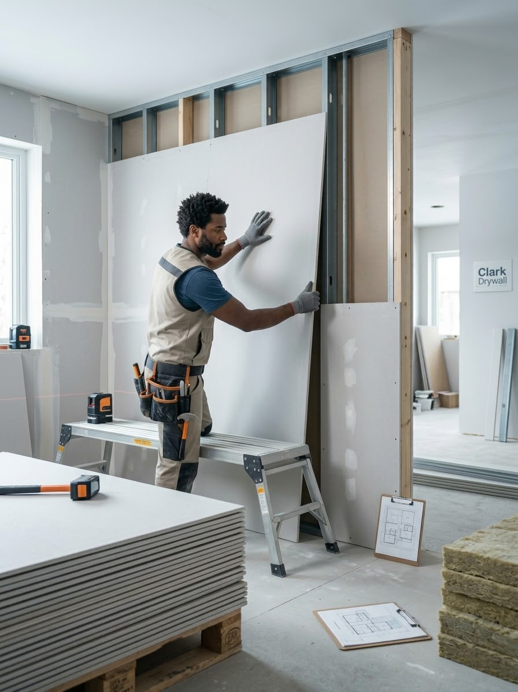

Installation de cloisons sèches
Pose et fixation de plaques de cloisons sèches sur charpente en bois ou en acier pour les nouveaux bâtiments, les ajouts et les rénovations. Les plaques sont disposées pour limiter les joints et couper proprement autour des ouvertures, prises et éléments.
- Plaques standard, résistantes à l’humidité et ignifuges
- Murs et cloisons sur montants en bois ou acier
- Sous-sols, ajouts et rénovations complètes